Four screen sizes are available, from 5.7 to 12.1 inches.
Building Automation
Industrial Automation
Power Automation & Safety


Bangladesh Distributor
NSJ Series
Programmable Controllers

Contributes to the miniaturization and standardization of the operation unit's control panel
about this Product Family
Related Contents
- Automation Systems
- Programmable Controllers
- Features
- Lineup
- Specifications
- Dimensions
- Catalog
last update: November 06, 2012
A Wide Selection of Scalable Display Controllers
(Product Line-up) Select the optimal control and display combination.
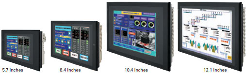
(NSJ Built-in Ethernet Port) Easy access to both Display Section and Controller Section
This allows PLC data to be read or written without adding an Ethernet Unit. PLC data can also be read or written, and alarms and recipes can be transferred, from a host computer.
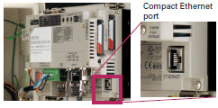
Easy Access from a Host Computer
• Screen data and ladder programs can be easily transferred via Ethernet.
• PLC data can also be read by a host application (using FINS communications).
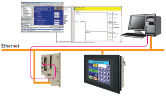
Easy Access to Other PLCs
• PLC2 data can be easily displayed and set from the NSJ (PLC1) display.
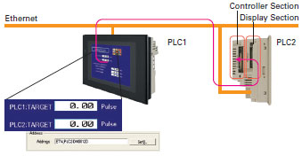
Note: It is also easy to allocate data from another host device for reference.
(Expansion Units) Support a wider range of applications.
Controller Link Unit (NSJW-CLK21-V1)
High-speed, large-capacity data link
The PLC data link function can be used to provide a high-speed, large-capacity data link between Controllers.
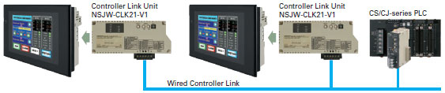
I/O Control Unit (NSJW-IC101)
Easy addition of Special I/O Units and CPU Bus Units
Used to mount Motion Control Units and other Special I/O Units or CPU Bus Units to the NSJ-series Controller, for excellent expandability.
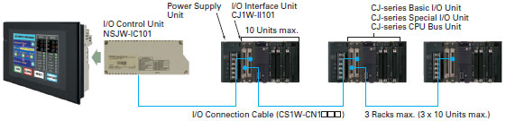
Ethernet Unit (NSJW-ETN21)
Full use of versatile Ethernet functions
The NSJ built-in Ethernet port increases expandability with host computers by enabling functions such as communications implemented with CMND instructions and e-mail.
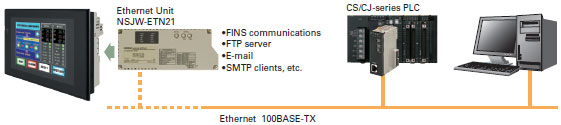
Note: For detailed information on functions related to the NSJ built-in Ethernet port and Ethernet Unit, refer to Catalog.
Meeting the Growing Needs for Control Panel Standardization
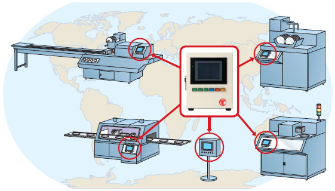
Effects of Standardizing Control Panels
Waste and inconsistency in design, installation and maintenance can be eliminated by supplying control panels that have the same basic operation regardless of the factory, the process, and the devices used in any country of the world.
1. Operating errors can be prevented by providing the same operability.
Reduce temporary lower operating efficiency caused by changing operators.
Reduce temporary lower operating efficiency caused by changing operators.
2. There is no need to produce an operating manual for each device.
Initial training cost can also be reduced.
Initial training cost can also be reduced.
3. Standardization greatly reduces the number of maintenance parts.
Even if a malfunction occurs, the entire control panel can be replaced as a module for quick and easy system
restoration.
Even if a malfunction occurs, the entire control panel can be replaced as a module for quick and easy system
restoration.
4. Standardization makes it possible to create templates for design documents, screens, and ladder programs. This
increases the ability to reuse the templates, which greatly raises design efficiency.
increases the ability to reuse the templates, which greatly raises design efficiency.
Less Effort in Designing and Debugging
Advantages of One Package
Use of a single USB cable simplifies both design and debugging.
Use of a commercially available USB cable allows easy, high-speed transferring of screen data and ladder programs. There is also no need to change cables for transfers such as these.
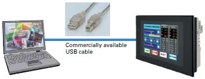
(1) Power ON
(2) Simply connect the USB cable and you are ready to transfer screen data and ladder programs.
Continue using your software assets.
Continue to use all the screen data for NS-series PTs and ladder programs for CS/CJ-series PLCs.
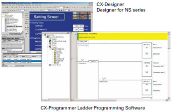
Simply turn ON the power and start using it. No need for initial settings.
There is no need to connect the Controller Section and Display Section, and no need to make initial communications settings or other settings.
The system starts up as soon as the power is turned ON. Even the standard-equipped DeviceNet Master is completely set in the default settings.
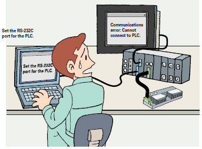
The CX-One Integrated FA Tool Package Is Available
This software can be used to debug ladder programs and screens without even having to connect to an actual system.
The test functions of the CX-Designer Screen Designer for NS Series have been further strengthened. By selecting CX-Simulator as the connection destination, screen data and ladder programs can be simultaneously tested without even having to connect to an actual system.
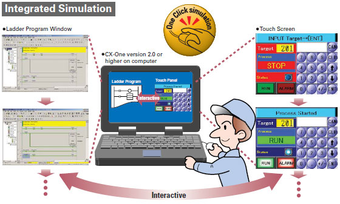
The SAP Library, which dramatically reduces effort in design, has also been greatly expanded.
More than 2,000 Smart Active Parts (SAP) are available for directly accessing OMRON PLCs and components. Simply copy them from the library and paste them onto the screen. There is absolutely no need to design screens or ladder programs for these objects.
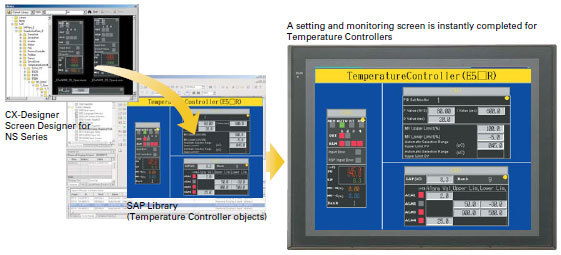
Less Effort in Maintenance
Two Troubleshooters Come as a Standard Feature
Enables a quick, on-site action without any software.
The standard-equipped PLC Troubleshooter and DeviceNet Troubleshooter contribute to solving problems during device startup and operation. When an error occurs, simply follow the on-screen instructions to confirm the error details and quickly implement countermeasures, without referring to the manual.
A Ladder Program Monitor Is Also Standard
Switching from the operation screen to the screen for monitoring PLC ladder programs only takes about 5 seconds.
This software lets you monitor PLC program status, search for addresses or instructions, monitor multiple I/O points, and much more. It only takes about 5 seconds to switch from a user screen to the ladder program monitoring screen. From a selected input bit, you can also search for the next sequence output instruction that uses the same address.
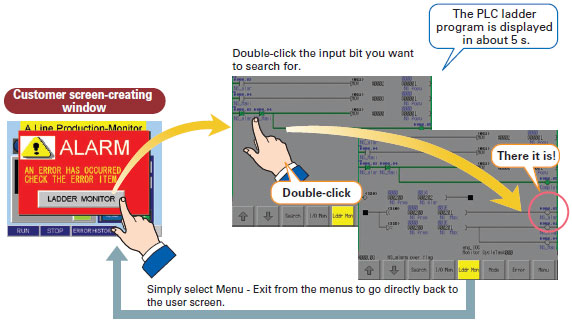
A Data Backup Function Is Also Standard
Easy backup without a computer.
Simply follow the on-screen instructions to back up both screen data and ladder programs for the Controller Section.
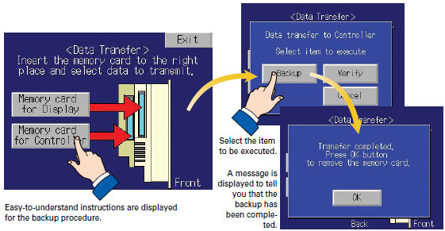
last update: November 06, 2012